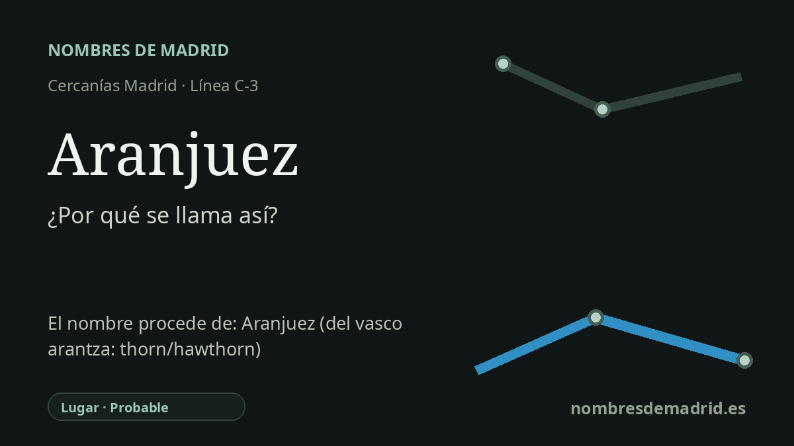

Publicado el · Investigación de Nombres de Madrid · Cómo verificamos cada origen · 8 fuentes consultadas
Respuesta rápida
La estación de Aranjuez toma su nombre del Real Sitio y Villa al que sirve, célebre por su palacio, sus jardines y el paisaje del Tajo y el Jarama. El topónimo procede probablemente de las formas medievales Aranz/Aranzuel y suele relacionarse con el vasco aranz/arantza, 'espino' o 'espino albar', aunque la etimología no está cerrada.
La historia del nombre
La estación de Aranjuez se llama así por el municipio de Aranjuez, el Real Sitio y Villa situado en el extremo sur de la Comunidad de Madrid. Para los viajeros de la línea C-3 de Cercanías, el nombre es ante todo geográfico: identifica la ciudad desarrollada en torno al palacio real, los jardines, las huertas de regadío y el paisaje formado por el Tajo y el Jarama.
El nombre antiguo que hay detrás de la estación es más complejo. La documentación medieval recoge formas como Arauz o Aranz en el siglo XII, Aranzuel o Aranzuech en el XIII, y después Aranzueque, Aranzugue, Aranzuet o Arançuex antes de que la forma moderna Aranjuez quedara fijada en el siglo XV. Esas variantes muestran que el topónimo es muy anterior al ferrocarril y también anterior a la ciudad cortesana planificada de época borbónica.
La explicación filológica más conocida relaciona la base antigua Aranz con el vasco aranz o arantza, con el sentido de espino, espino albar o arbusto espinoso. Rafael Lapesa incluyó Aranjuez entre los topónimos que podían conectarse con ese elemento vasco, aunque el lugar esté lejos del dominio histórico del euskera. Otros estudiosos han sido más prudentes y han propuesto que *aranz pueda ser un elemento prerromano más amplio, o quizá relacionado con nombres de ríos y valles, no necesariamente un fitónimo vasco directo.
Aranjuez alcanzó relevancia nacional por razones distintas del origen remoto del nombre. La UNESCO describe el Paisaje Cultural de Aranjuez como un paisaje real y agrícola modelado por el Tajo y el Jarama, y sitúa su transformación como Real Sitio en el reinado de Felipe II, en el siglo XVI. Patrimonio Nacional vincula igualmente el Palacio Real con la decisión de Felipe II de sustituir la antigua residencia de los maestres de Santiago por un nuevo palacio iniciado desde 1564.
El ferrocarril añadió otra capa histórica al topónimo. La línea Madrid-Aranjuez se inauguró el 9 de febrero de 1851, de modo que Aranjuez fue el destino del primer ferrocarril madrileño y del segundo de la Península tras Barcelona-Mataró. La estación actual, de estilo neomudéjar, es posterior: sus obras comenzaron en 1922 y terminaron en 1927, sustituyendo a una estación primitiva cercana al Palacio Real; el nombre, sin embargo, siguió siendo el de la ciudad. Por eso el origen del nombre de la estación es seguro, mientras que la etimología profunda de Aranjuez conviene presentarla como probable y debatida.